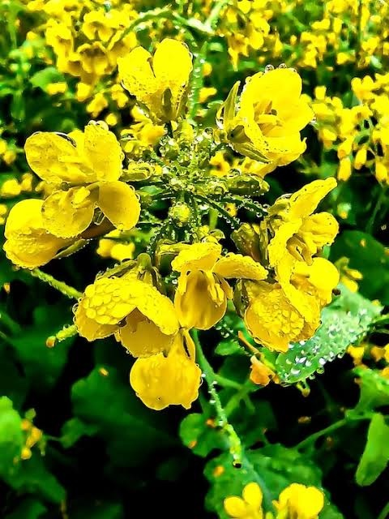
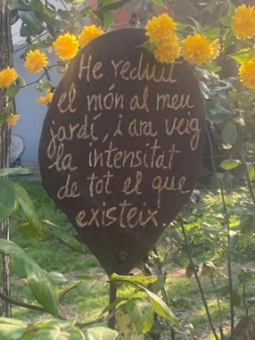

一次向内的漫步

欢迎来到这个由自然、宁静与发现组成的小宇宙。
您来到了一个时间可以换一种节奏的地方。在这里，不必匆忙，不必赶往哪里，也不必以某种特定方式做任何事。
我们只请求您一件事：活在当下。
在整个花园里，您会发现一些角落，邀请您交谈、散步、与香气嬉戏、聆听流水，或许还会发现关于自己的新东西。有些时刻适合分享，有些则适合在安静中品味。
让感官引导您，让每个空间以自己的方式对您说话。不要追求任何结果。这里没有对错之分。
小路从这里开始。其余的，由您自己去发现。
地图

我们出发，穿过花园，绕着它的中心，沿着从共同体验通往个人发现的小路前行。
四个角落，四种与自然、与自己相连的方式。
- 角落一：话语与沉思的角落。
- 角落二：水之径。
- 角落三：香气游戏。
- 角落四：蜕变。
不要着急，沿着路线走：停下来，呼吸，观看，让自己感到惊喜。
芬芳的拱门会带您从一个空间走到下一个空间。沿着小路，您还会发现其他可以坐下、唱歌、阅读、惊叹或只是静静观看的地方。
角落一 · 话语与沉思的角落

分享话语和想法，沉思，倾听他人。
在椴树的树荫下，花园为我们提供了一个停下来、相遇的地方。
也许我们刚从充满言语的日子里走来，思绪层层堆积，或者有些谈话一拖再拖。现在，我们有机会坐下来、呼吸、倾听。
您周围有一些简短的文字，写着可供思考的想法。读一段吸引您目光的。让这些话语在心里沉淀下来。
如果您和一群人同行，可以分享阅读时想到的东西。您也可以只是倾听别人，而不必回应。有时，真正的倾听就是陪伴一个人的美好方式。
不必得出什么结论。只要一句话、一个想法或一个眼神让我们彼此靠近一点就足够了。
停下片刻，问问自己：
我需要说什么？我又需要听到什么？
让谈话不急不缓地流淌，就像一阵微风穿过椴树的叶子。
角落二 · 水之径

享受全部五种感官。行走，感受身体，把花园尽收心底。
在榛树和枣树下，花园在您面前展开，邀请您放下一切。
感受双脚触碰地面，身体在移动，重心在变化。聆听您的呼吸，让它来定下节奏。没有匆忙，也没有必须到达的目的地。只有活在当下的喜悦。
走到尽头时，坐一会儿吧：一个可以休息、欣赏花园的地方正等着您。瀑布奏着它的音乐，流水送来清凉。环顾四周，聆听流水和被微风轻抚的树叶。
现在，问问自己：
这次散步之后，您身上有什么改变了？
也许只需闭上眼睛，深深呼吸，感受自己是这一刻的一部分。
角落三 · 香气游戏

唤醒嗅觉，玩一玩，在花园中发现自然的灵魂。
有些记忆不是通过眼睛或言语来到我们身边的。有时，只要一种气味，我们内心的某样东西就会苏醒。
这个角落里有一个小小的发现游戏在等着您。拿起一个小罐子，打开，轻轻把香气凑近。吸一口气。试着猜猜里面藏着哪种植物。
这种气味让您想到什么？它熟悉吗？它唤起了某段记忆吗？它激起了好奇、平静、喜悦，还是一种您说不太清的感觉？
有了发现之后，去花园里找找这种植物。留意它的叶子、形状、颜色以及它生长的地方。
让这个游戏提醒您：发现，也是一种学习观看的方式。也许某样看似微小或不起眼的东西，会突然变成一个特别的发现。
问问自己：
我周围还有多少东西，是我还没学会去注意的？
和其他人分享您的发现，享受这份惊喜。在这里，让自己感到惊喜也是道路的一部分。
角落四 · 蜕变

停下来，看看自己，向改变敞开。
发现我们内心的蝴蝶
您已来到花园的最后一个角落。这个空间只属于您。
坐下之前，在地上的文字前停一停。平静地读一读，让它的话语留在您心里。
毛毛虫和蝴蝶是同一个生命，但它们在世界上的存在方式并不相同。有一天毛毛虫觉得不可能的事，在它变成蝴蝶时就成为可能。
那我们呢？我们有多少次把自己看成毛毛虫，却没有察觉那双尚待发现的翅膀？有多少资源、多少力量、多少美，也许正等待着在我们心中苏醒的时刻？
镜子前
现在，坐到镜子前。温柔地看着自己，不加评判。今天您感觉如何？在人生的这个时刻，您如何看待自己？您想在自己身上改变什么、照料什么、让什么生长？
准备好后，转动镜子，直到找到您最喜欢的花园一角。寻找那个让您感觉美好的景致，看它出现在您身后。
再看一次。现在镜子前不只有您。花园也在那里。树木、植物、光、土地……一切都是画面的一部分，而您也是其中的一部分。
您看待自己的方式有了什么改变？
也许坐下之前，您觉得只有自己一个人。现在，您或许会发现自己是一个更大整体的一部分，与周围的生命相连。
给自己几分钟去感受。不需要立刻得到答案。有些发现需要安静、时间和信任。
也许蜕变并不意味着变成另一个人，而是发现那些早已活在我们心中、却还没让它舒展开来的一切。
站起身时，带上这个问题：
您想成为什么？您想展开怎样的翅膀？
请记住：也许您梦想成为的那只蝴蝶，早已静静地栖息在您心中。
芬芳的拱门

沿途您会看到覆满芳香攀缘植物的拱门。它们就像无形的丝线，把整段漫步串联起来，邀请您在一次体验与下一次体验之间专注地呼吸。
慢慢穿过这道拱门。把占据您心思的事暂时留在身后，带着苏醒的感官走进新的空间。
继续前行之前，停一下。深深呼吸，让植物的香气按它自己的节奏来到您身边。
这股香气在您心中唤醒了什么？也许是一段回忆、一种情感，或只是一种愉快的感觉。不必寻找答案，只需感受。
不必辨认香气，也不必为它寻找意义。只要留意它。
这样，拱门就成了体验之间的小小停顿，加深了这次漫步的冥想氛围。
其他角落
一路上，您已发现了四个角落，穿过了以芬芳相伴的拱门。但花园里还藏着小小的宝藏。在小路之间，您会找到其他可以停下、坐下、休息、阅读、歌唱，或只是让时间流逝的地方。
您也许会发现，除了观看、聆听和呼吸，没有别的事要做……直到您觉得自己是这个小宇宙的一部分，是树木、植物、流水和在这里跳动的生命之间的又一个元素。
因为您不只是一个在花园里散步的人：您也是花园的一部分。
有时，行走也是回到自己的一种方式。您不必找到答案。也许只需呼吸，感受此时此刻您就在这里。
小路上还有许多惊喜等着您：




